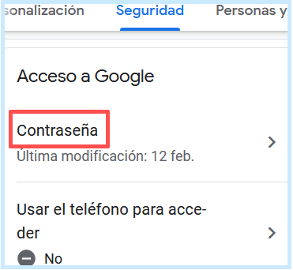

- Ir a este hipervínculo directo, que dirige hacia la página para cambiar la contraseña.
- En la página que ha cargado, observe que hay dos recuadros en los cuales hay que introducir la nueva contraseña en ambos y por ultimo presionar en el botón Cambiar la contraseña.
Tenga en cuenta que después de hacer clic en el hipervínculo, le pueden solicitar que ingrese su contraseña actual o que inicie sesión.
Cómo cambiar la contraseña
- iniciar el navegador de internet y dirigirse a: accounts.google.com
- En el menú, oprimir en seguridad.
- Dirigirse hacia abajo y en el apartado acceso a google presionar en Contraseña.
- En este paso confirme que es el dueño de la cuenta escribiendo su contraseña actual en el recuadro vacío.
- Escribir la contraseña nueva en el primer espacio y luego escribirla de nuevo en el segundo espacio para cerciorarse que está bien escrita. Para terminar, oprimir en el botón, como se muestra en la siguiente captura.

Cómo restablecer la contraseña
- Dirigirse la página de Gmail de inicio de sesión donde hay que escribir el correo electrónico y pulsar en siguiente.
- Pulsar en ¿Has olvidado tu contraseña?
- En este paso, cada vez que se presiona en probar de otra manera, se indicará un método diferente para restablecer la contraseña. En este caso se utilizará el de obtener un código de verificación.
- Observe que se exponen los últimos dos dígitos del número de teléfono. Se procederá a escribir el número completo y pulsar en enviar.
- Un mensaje de texto con el código de verificación tendría que llegar al número indicado anteriormente, hay que escribir ese código de verificación en el espacio y pulsar en siguiente.
- En el primer y en el segundo recuadro introducir la nueva contraseña y pulsar en cambiar contraseña. En algunos casos el nombre del botón puede variar.